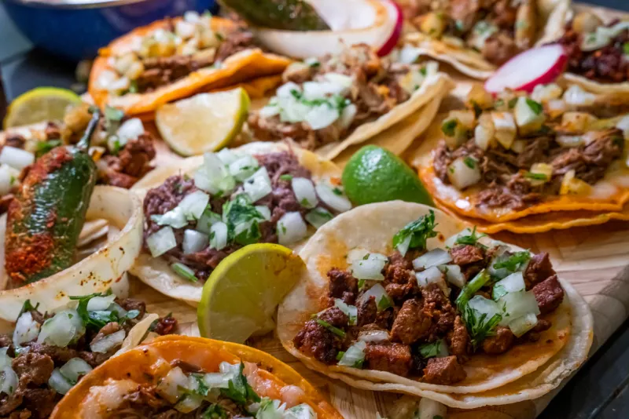
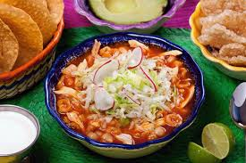
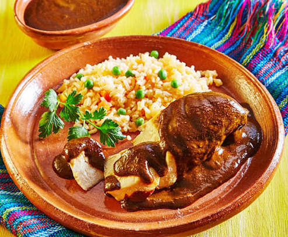
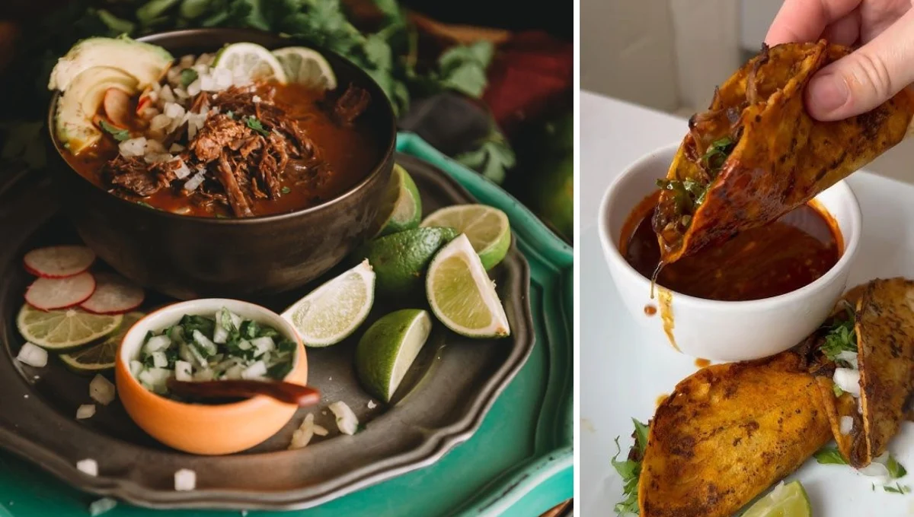
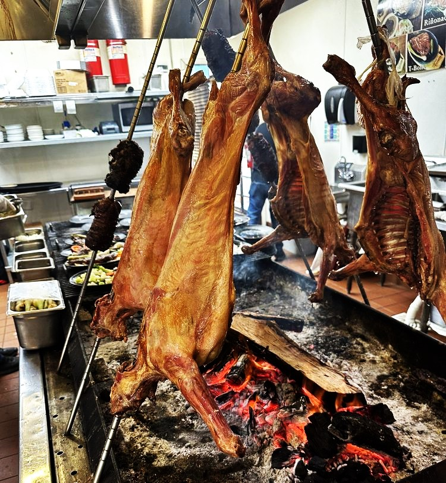

Tradicional
Tacos Mexicanos
Uno de los platillos más representativos de México.
Descubre los sabores tradicionales y modernos de México.
La gastronomía mexicana es reconocida mundialmente por sus sabores, colores y tradiciones culinarias.

Uno de los platillos más representativos de México.

Platillo típico mexicano lleno de tradición y sabor.

Mezcla única de ingredientes y especias mexicanas.

Platillo tradicional mexicano con carne y especias.

Platillo tradicional mexicano con carne de cabra y especias.
Chiles, maíz, cacao y especias tradicionales.
La comida mexicana es Patrimonio Cultural de la Humanidad.
Cada región tiene sabores y recetas únicas.
| Platillo | Región | Tipo | Nivel Picante |
|---|---|---|---|
| Tacos | Todo México | Comida callejera | Medio |
| Pozole | Guerrero | Sopa tradicional | Bajo |
| Mole Poblano | Puebla | Gourmet | Medio |